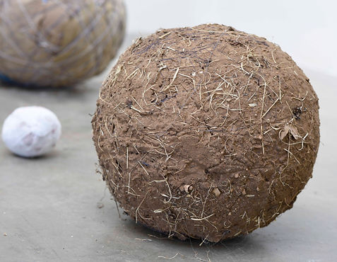

Ann Schnake
Dung Beetles and Humans Navigate by The Moon and the Milky Way
June 15 - August 15
Materials: dirt, tumble weeds, leaves, shop towels, dryer lint, human hair, horsehair, artificial hair, feather, medical grade rubber tubing, paper, cardboard, string, wire + other found materials + paper, tea, paint
My art practice revolves around physical structures of sculpture and installation. One part of my practice is to make globes out of the discarded materials in my surroundings, whatever I find, from plant material to plastic. I repetitively gather, cover, wind, tie, compress and wind again. Because I have been a nurse, a cook and a caregiver for most of my life, in all forms of sculptural works, l hanker for the handling, the raw physicality of materials, the more corporeal the better. All the balls are visuality, poetics and a bodily response to the sense of collapsing worlds and dying suns in amber skies; they are also an embodiment of ideas of planetary time and space, a reminder of being on a planet.
When I speak of global embodiment, I think of when we drive into the sunset or the horizon and we do not fall off a flat earth, we have a glimmer of our planetary placement; There are other moments when we experience a perspective of time and place, beyond the small aspects of our immediate lives, experiencing an embodied sense of being interconnected on a planet, in a universe.
Dung beetles and humans share the ability to navigate by the moon and the Milky Way. Dung beetles roll balls of animal excrement, forming giant earthy balls that can be more than one thousand times their weight, equivalent to a human pulling six filled buses. As humans, we also can choose to be pirates OR to enact compassion, deny greed, and find better ways of living.
